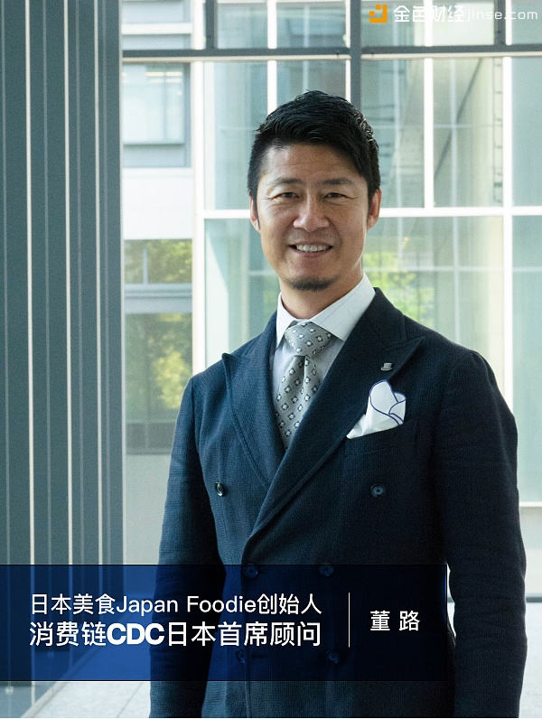

開發快訊
消费链CDC突进日本 牵手日本最大移动支付平台生态
2018/1/30 19:12
消费链CDC基金会与日本美食Japan Foodie达成战略合作协议。双方将在日本市场共同推进消费链CDC在消费数据资产运营和在线支付区块链生态技术研究展开深入合作。
消费链CDC是全球首个去中心化的智能区块链消费数据资产营销生态平台。宗旨是通过全球消费者自主采集的消费数据资产，形成去中心化的区块链广告网络，让提供数据源的用户本身享受到数据利益分成。这将革命性的挑战Google等传统互联网巨头所垄断的中心化竞价广告模式。
消费链CDC是全球首个去中心化的智能区块链消费数据资产营销生态平台。宗旨是通过全球消费者自主采集的消费数据资产，形成去中心化的区块链广告网络，让提供数据源的用户本身享受到数据利益分成。这将革命性的挑战Google等传统互联网巨头所垄断的中心化竞价广告模式。

日本美食Japan Foodie创始人董路同时宣布加入消费链CDC的全球顾问团队，担任日本市场的首席顾问。
董路先生20岁东渡日本，就职于日本高盛集团，毕业于美国斯坦福大学MBA。经历了硅谷的历练，2004年回到中国创办过亚洲第一家网上衬衫定制品牌Beyond Tailors，以及内衣品牌La Miu 兰缪，积累了丰富的电商经营经验，完成共计30亿日元融资，成长为中国No.1的独立系ec女内衣品牌。
董路在2015年于日本东京创办日本美食Japanfoodie，目前是日本唯一仅针对外国游客访日的餐饮信息及交易支付平台。通过日本美食app，可以挑选日本当地特色餐厅，同时提供预订支付及团购优惠等O2O交易服务、并支持最先进手机支付方式，如支付宝，银联卡，信用卡，ApplePay，Paypal，解决了外国人游客在日本遇到语言方面和点菜／预订／支付的问题。2017年02月，在日本最大的pitch contest「未来2017」获得最优秀奖。2017年06月，日本美食Japanfoodie获得1.3亿日元pre-A融资。投资方包括前Intel日本社长西冈郁夫，MS Capital合伙人袁小航，著名天使投资人千叶功太郎，雅虎日本株式会社执行董事田中佑介，株式会社Legend Partners。
日本美食app的商业模式是面向全球的移动支付的聚合平台。通过消费者和商家的移动支付大数据，发展AI精准营销和金融贷款平台。现在已经有44个国家的消费者在日本使用日本美食app的支付平台，预计2018年会成为日本第一大移动支付平台。
作为日本首家战略合作伙伴，日本美食app在消费数据资产累积，在线支付服务领域发展的广阔前景，对旅游消费行业的精耕细作，以及对区块链技术和自身商业模式的准确定位，将通过集合这几个巨大的优势为消费链CDC在日本的落地提供坚实的团队和技术基础。
消费链CDC及日本美食双方目标在未来共同组建日本当地组建技术开发团队，打造更适合日本消费场景的数据资产运营服务。
消费链CDC正在稳步开展全球化的场景应用及技术合作，逐步落实国际化产品的发展进程，为全球社区创造更大价值。